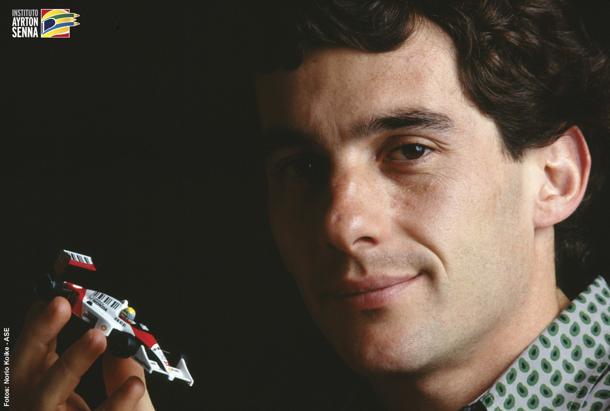

Ayrton Senna

Ayrton Senna holding a miniature of himself in his F1 car
- Son of businessman Milton Guirado Theodoro Da Silva and Neyde Joanna Senna Da Silva, Ayrton Senna was born on March 21, 1960.
- He began officially competing in kart competitions at the age of thirteen. His first official victory took place in the first official karting race in which he participated, in July 1973.
- At the 1979 kart world championship in Estoril , Ayrton wore the yellow helmet that became his trademark on the tracks for the first time.
- In 1981, he started competing in Europe , winning the English Formula Ford 1600 championship (12 wins in 20 races), for Ralf Firman's team.
- In 1982, he was European and British Formula Ford 2000 champion (22 wins in 27 races), for Dennis Rushen's team. Of this championship, the historic victory at the Snetterton Circuit (England) stands out , when Ayrton ran the entire race with problems with his front brakes.
- At that time, he adopted his mother's maiden name, Senna, as Silva is a very common name in Brazil.
- Already on November 13, he made his debut in British Formula 3 in Thruxton, won, took pole position and the fastest lap, with a "Ralt Toyota RT3".
- In 1983, Senna won the English Formula 3 championship (thirteen wins in 21 races, 9 of them consecutive), for Dick Bennetts' team.
- Still in 1983, he carried out his first tests with a "Formula 1 car".
- Ayrton Senna was part of 4 teams, and the first was Tolemam where he raced in 1984.
- 1985-1987: raced in the Lotus team.
- 1988-1993: Ran for McLaren team (His main team).
- 1994: raced for the Williams team, where his tragic accident occurred...
- Still in 1994, on May 1st, Ayrton Senna died, as a result of the collision between the car of the Brazilian driver Ayrton Senna and a concrete barrier, while participating in the San Marino Grand Prix, at the Autódromo Enzo e Dino Ferrari, in Ímola , in Italy.
"Rest in peace Ayrton Senna..."